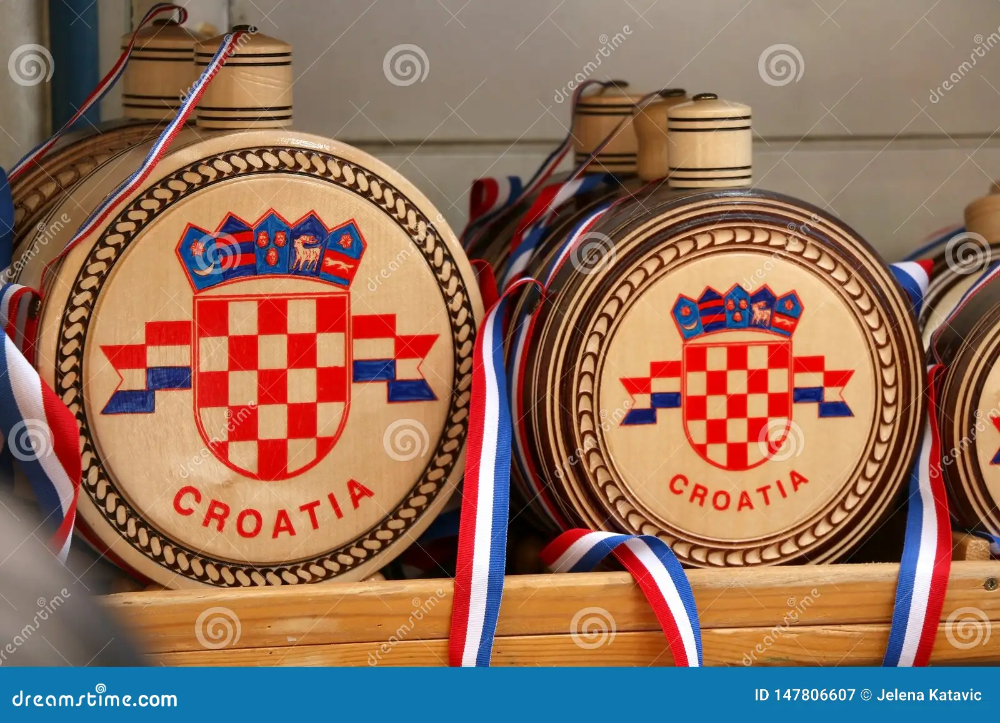

The Croatian Tradition
Croatia's cultural identity is intricately woven with a myriad of traditions and customs, each serving as a thread in the rich tapestry of its heritage. These traditions, passed down through generations, embody the essence of Croatian culture and provide a sense of continuity amidst the passage of time.
Folk Music and Dance
Folk music and dance are integral components of Croatian tradition, reflecting the diversity of its regions and the resilience of its people. From the spirited melodies of tamburica orchestras to the graceful movements of traditional dances like the kolo, these expressions of cultural identity are cherished and preserved.

Handcrafted Treasures of Croatia
Croatia's tradition of craftsmanship spans centuries, with artisans honing their skills in disciplines such as pottery, lace-making, and woodcarving. Through meticulous attention to detail and a commitment to quality, these artisans create timeless treasures that embody the essence of Croatian tradition.
Commemorating Shared Heritage
Throughout the year, Croatia comes alive with festivals and celebrations that pay homage to its cultural heritage. Whether it's the colorful processions of Carnival or the solemn observances of religious holidays, these events serve as vibrant expressions of Croatian tradition and community spirit.
Tastes of Tradition from Land and Sea
Croatian cuisine is a reflection of its diverse landscapes and culinary traditions, with each dish telling a story of the region from which it originates. From coastal delicacies like seafood risotto to hearty inland fare such as Ćevapi, Croatian cuisine is a celebration of tradition and local ingredients.
Preserving Traditions in Village Life
In Croatia's rural communities, traditional customs and practices remain deeply ingrained in everyday life. From agricultural rituals tied to the changing seasons to communal gatherings centered around food and music, village life offers a glimpse into the enduring traditions of Croatian culture.
Reverence and Ritual in Croatian Faith
Religion plays a significant role in Croatian tradition, shaping everything from daily life to major milestones and celebrations. Through religious observances such as Mass, processions, and pilgrimages, Croatians uphold centuries-old traditions and reaffirm their faith and cultural identity.
Balancing Tradition with Innovation
While committed to preserving traditional practices, Croatia also embraces innovation and modernity in a rapidly changing world. Whether it's the fusion of traditional and contemporary music or the revival of ancient crafts with a modern twist, Croatians find creative ways to honor their heritage while embracing the future.